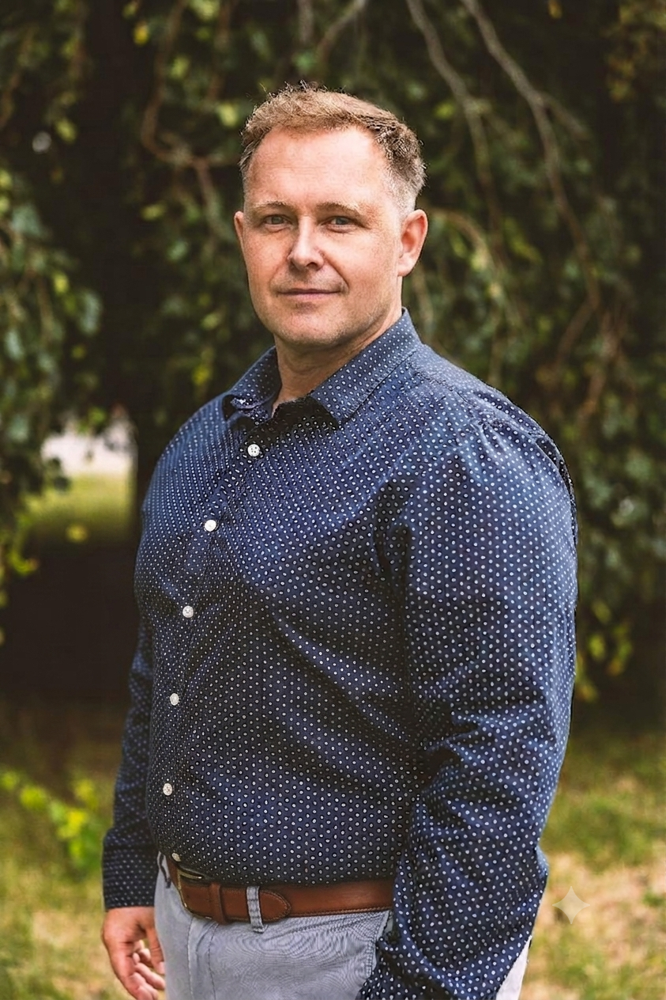

.png)
Hravý život
Hravý život je prostor pro osobní rozvoj, psychohygienu a mentální posilování.
Skrze neformální herecké
metody
pomáhá lidem od 15 do 60+ let odhazovat stres, bourat stereotypy a objevovat životní lehkost v bezpečném
a
přátelském prostředí formou individuálních a skupinových lekcí.
O nás
Hravý život je prostor pro osobní rozvoj, psychohygienu a mentální posilování. Skrze neformální herecké metody pomáhá lidem od 15 do 60+ let odhazovat stres, bourat stereotypy a objevovat životní lehkost v bezpečném a přátelském prostředí formou individuálních a skupinových lekcí.
Lukáš Červenka
Herec, lektor a průvodce hravým rozvojem Lukáš je profesionální herec s více než třicetiletou praxí, muzikant a člověk s hlubokým citem pro lidskou jedinečnost a zkušený lektor v oblasti osobnostního rozvoje. V konceptu Hravý život efektivně propojuje principy aplikovaného herectví, vědomé komunikace a mentálního posilování. Divadelní metody transformuje do srozumitelných a praktických nástrojů, které klientům umožňují redukovat stres, odbourávat vnitřní bariéry a rozvíjet autentický projev v profesním i osobním životě. Díky vysoké míře empatie a pokročilým interpersonálním dovednostem dokáže Lukáš cíleně reagovat na specifické potřeby různých věkových skupin. Má cenné zkušenosti z komerční sféry a energetického sektoru, což mu umožňuje mluvit s korporátními klienty a lidmi v produktivním věku stejným jazykem. Je autorem úspěšných kurzů zaměřených na rozvoj emoční inteligence, asertivitu, týmovou kooperaci a budování zdravých vztahů na pracovišti. Jeho programy slouží jako vysoce účinná prevence syndromu vyhoření. Jako lektor klade důraz na systematický přístup, koncepční myšlení a absolutní profesionalitu. Vytváří bezpečné, nesoudící prostředí, kde je chyba vnímána jako legitimní součást růstu. Účastníci pod jeho vedením získávají nadhled, flexibilitu a schopnost jednat s větší lehkostí a jistotou. „Naším cílem není edukace v oblasti dramatického umění, nýbrž integrace hravosti a svobody do každodenní reality. Pomáháme lidem žít a pracovat s větší lehkostí a vnitřní rovnováhou.“

Co nabízíme: psychickou podporu, posílení sebedůvěry a optimismu, pomoc při aktivaci úlohy uvědomělého myšlení. Mentální posilování - proces rozvoje psychické odolnosti, koncentrace a emoční stability. Zahrnuje techniky jako je vizualizace, dechová cvičení, pozitivní sebemluva a kognitivní trénink, které vám pomohou lépe zvládat stres, překonávat překážky a maximalizovat váš výkon v osobním i sportovním životě. • Vizualizace (imaginace): Pravidelné představování si úspěšného zvládnutí náročné situace pomáhá mozku připravit se na reálný zátěžový stav. • Trénink všímavosti (Mindfulness): Cvičení zaměřená na přítomný okamžik snižují hladinu stresu a zlepšují schopnost hluboké koncentrace. • Pozitivní sebemluva: Vědomé nahrazování negativních myšlenek konstruktivním vnitřním dialogem pomáhá budovat sebedůvěru. • Kognitivní cvičení: Trénink mozku pomocí hádanek, hlavolamů a logických úloh podporuje neuroplasticitu a bystrost. Skupinové kurzy Hravý život přinášejí psychickou podporu, posílení sebedůvěry a optimismu, pomoc při aktivaci úlohy uvědomělého myšlení. V partě skvělých lidí odhodíte stres, zbouráte trému a v bezpečném prostředí plném smíchu zjistíte, jak žít s větší lehkostí a bez sociálních masek. Skupinové kurzy: Síla sdílení, humoru a společného rozvoje Chcete na sobě pracovat, ale klasické přednášky vás nudí a z profesního herectví máte respekt? Naše skupinové kurzy Hravý život jsou pravým opakem upjaté akademické půdy. Vytváříme uvolněné a bezpečné prostředí, kde neexistují chyby – jen čistá radost ze hry, objevování a lidského napojení. Skrze hravé divadelní techniky se učíme odhazovat každodenní role a stres. Skupina u nás není porotou, která vás hodnotí, ale záchrannou sítí a zdrojem obrovské podpory. Kurzy otevíráme v cílených, nebo kombinovaných skupinách, aby pro vás byl prožitek co nejbližší: • Skupiny pro teenagery a mladé (15–25 let): Žádný "cringe" ani tlak na výkon. Jen parta vrstevníků, možnost odhodit masky ze sociálních sítí, uvolnit se, zatočit s trémou a najít své autentické já. • Skupiny pro lidi v produktivním věku (26–50 let): Dokonalá psychohygiena a balzám na duši po náročné práci. Společně vystoupíme z kolotoče povinností a stereotypu, vyvětráme hlavu a vrátíme do života hravost. • Skupiny pro zralý věk (50–60+ let): Elixír mládí a vitality. Přátelská setkání u kreativních aktivit, která bystří paměť, přinášejí radost ze sdílení a propojují lidi, kteří se chtějí bavit a smát bez ohledu na věk. Vstupte do skupiny, kde se nikdo nad nikoho nepovyšuje a kde se z cizích lidí během pár lekcí stávají blízcí parťáci. Pojďte v tom jet společně! 💰 Ceník skupinových kurzů: Hravý život (Cyklus 8 lekcí | 1x týdně 120 minut v bezpečném kruhu) Všechny naše kurzy probíhají v menších, uzavřených skupinách (max. 10–12 lidí), což zaručuje individuální přístup, bezpečí a dostatek prostoru pro každého.
| Typ kurzu / Věková skupina | Cena za celý cyklus (8 lekcí) | Přepočet na 1 lekci (2 hodiny) | Hlavní benefit v ceně |
|---|---|---|---|
| Hravý start (15–25 let) Studenti a mladí dospělí | 3 490 Kč | ~ 436 Kč | Skripta s technikami proti trémě, neformální networking. |
| Hravý restart (26–50 let) Dospělí v produktivním věku | 4 990 Kč | ~ 623 Kč | Psychohygienické materiály, drobné občerstvení (káva/čaj). |
| Hravý elixír (55+ a senioři) Zralý věk | 2 990 Kč | ~ 373 Kč | Cvičení na paměť domů, posezení u čaje, komunitní přístup. |
| Program / Balíček | Obsah a rozsah | Cena za balíček | Přepočet na 1 lekci (2 hod) |
|---|---|---|---|
| Hravý restart (3 lekce) Akutní psychohygiena | 3× 120 minut. Ideální na rychlé odbourání trémy před prezentací, uvolnění akutního stresu nebo restart hlavy. | 7 900 Kč | ~ 2 633 Kč |
| Hravá proměna (6 lekcí) Nejoblíbenější program | 6× 120 minut. Systematická práce na sebevědomí, bourání vnitřních bloků a dlouhodobý osobní rozvoj. | 13 900 Kč | ~ 2 316 Kč (Ušetříte 2 300 Kč) |
| Jednorázová konzultace Ochutnávka / Diagnostika | 1× 120 minut. Jednorázové intenzivní setkání, zmapování vašich potřeb a nastavení osobního plánu. | 2 700 Kč | 2 700 Kč |